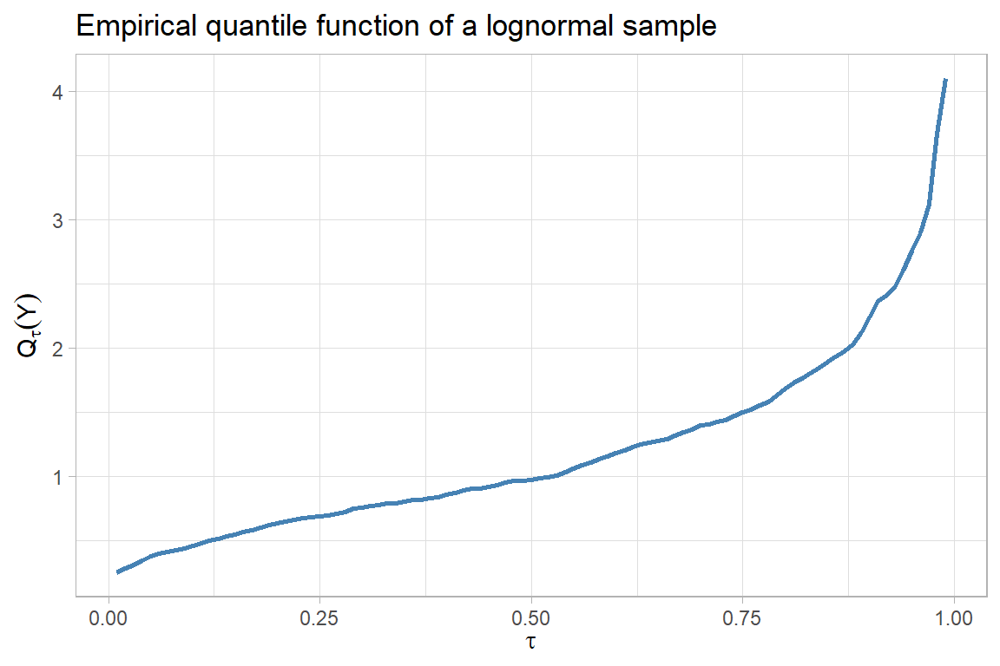
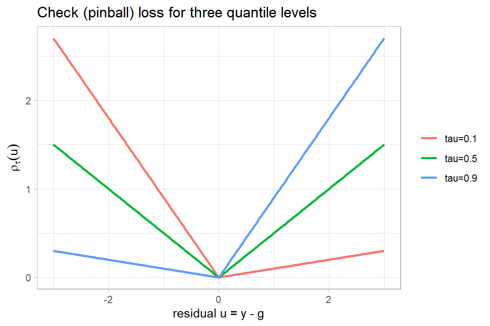
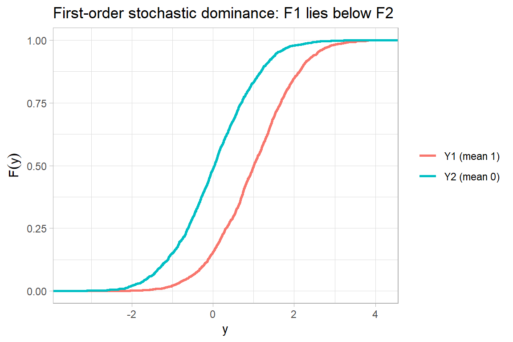
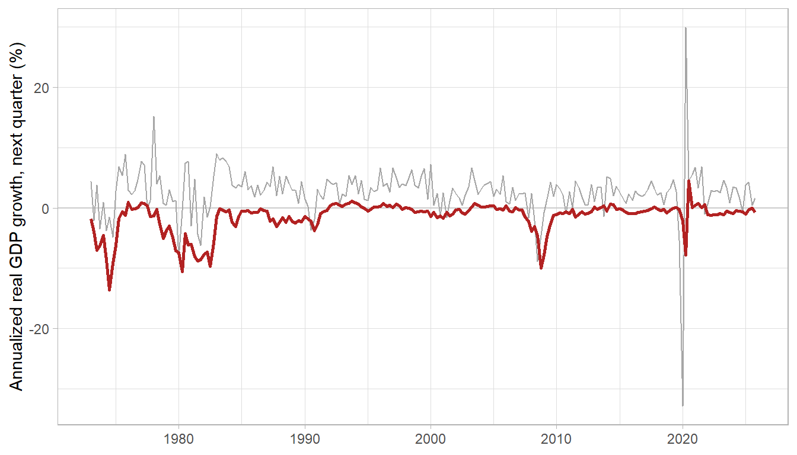
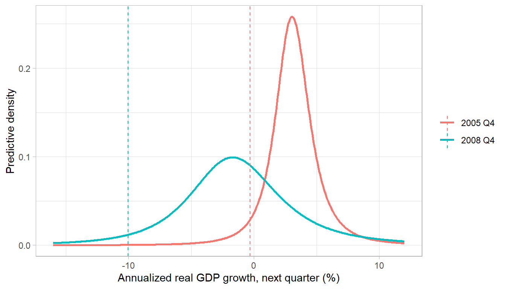

13 Quantile Regression and Distributional Methods
The previous chapter on nonparametric regression, Chapter 12, relaxed the functional form of the conditional mean \(E[Y \mid X]\), letting the data determine the shape of the regression curve. This chapter relaxes a different and more fundamental assumption, namely that the conditional mean is a sufficient summary of how covariates relate to an outcome. Many economic questions concern features of the response distribution that the mean simply cannot reveal, including spread, skewness, tail behavior, and inequality. Quantile regression and the broader family of distributional methods target the conditional quantile function \(Q_\tau(Y \mid X)\) and, ultimately, the entire conditional distribution \(F_{Y \mid X}\). The two strands of relaxation meet in nonparametric quantile regression, which frees both the functional form and the distributional summary at once.
We develop the material in stages. We begin with the population and sample definitions of quantiles, the check function that characterizes them as optimal predictors, and the least absolute deviations idea that this generalizes. We then move to conditional quantile functions and the linear quantile regression estimator of Koenker and Bassett (1978), its asymptotic inference, and its robustness properties. We turn next to censored quantile regression following Powell (1986), then to quantile treatment effects and their sharp distinction from average treatment effects. Distribution regression provides a complementary route to the same distributional objects, and we close with stochastic dominance, which orders entire distributions rather than single summaries.
13.1 How These Methods Relate
It helps to fix the relationship between this chapter and the nonparametric regression material before diving in. Standard least squares assumes both a functional form for \(E[Y \mid X]\), usually linear in parameters, and that this conditional mean is the object worth estimating. Nonparametric regression keeps the focus on the conditional mean but discards the functional form, estimating \(E[Y \mid X = x]\) flexibly through kernels, local polynomials, or splines. Quantile and distributional methods do the opposite by default. Linear quantile regression retains a parametric functional form, linear in covariates at each quantile level, but abandons the premise that a single central summary captures the relationship of interest. Instead it traces out \(Q_\tau(Y \mid X)\) across a range of quantile levels \(\tau\), recovering how covariates shift the location, scale, and shape of the conditional distribution.
The two ideas are orthogonal and therefore composable. Relaxing the functional form gives nonparametric mean regression. Relaxing the mean-summary assumption gives quantile regression. Relaxing both gives nonparametric quantile regression, in which \(Q_\tau(Y \mid X = x)\) is estimated locally and flexibly in \(x\) for each \(\tau\). The distributional viewpoint generalizes further still. Rather than estimating one quantile at a time, distribution regression estimates the whole conditional distribution function and inverts it, so that quantiles, expectiles, inequality measures, and tail probabilities all become readable functionals of a single estimated object.
13.2 Quantiles and the Quantile Function
Summarizing a distribution by its mean discards information. If \(Y \sim N(\mu, \sigma^2)\) then the mean alone hides the spread, and for asymmetric or heavy-tailed distributions it hides skewness and tail mass that often matter most for policy. Quantiles complement the mean by describing shape, dispersion, and tails directly.
Let \(\tau \in (0,1)\) denote the quantile index or level, sometimes called the quantile rank. For a random variable \(Y\) with cumulative distribution function \(F_Y\), the \(\tau\)-quantile \(Q_\tau(Y)\) is the value below which a fraction \(\tau\) of the mass lies, so that \(F_Y(Q_\tau(Y)) = \tau\) when \(F_Y\) is continuous and strictly increasing. To handle flat spots and jumps, the general definition uses the left-continuous generalized inverse,
\[ Q_\tau(Y) \equiv \inf\{ y : F_Y(y) \ge \tau \}. \]
Viewing the quantile as a function of \(\tau\) gives the quantile function \(Q_Y(\tau) \equiv \inf\{ y : F_Y(y) \ge \tau \}\) for \(0 < \tau < 1\). Several structural facts follow. If \(F_Y\) is invertible then \(Q_Y = F_Y^{-1}\). If \(F_Y\) has a flat spot, meaning a region of zero density, then \(Q_Y\) has a jump. If \(F_Y\) has a jump, as happens when \(Y\) is discrete, then \(Q_Y\) has a corresponding flat spot. Cumulative distribution functions are right-continuous with left limits, whereas quantile functions are left-continuous with right limits. The \(\tau\)-quantile and the \(100\tau\)-th percentile are the same object, so \(Q_{0.5}(Y)\) is the median and \(Q_{0.9}(Y) - Q_{0.1}(Y)\) is the interdecile range, a robust measure of spread.
Figure 13.1 draws that function for a right-skewed sample.
# Empirical CDF and quantile function of a right-skewed sample
set.seed(1)
y <- rlnorm(500, meanlog = 0, sdlog = 0.6)
tau <- seq(0.01, 0.99, by = 0.01)
qf <- quantile(y, probs = tau, type = 7)
ggplot(data.frame(tau = tau, q = qf), aes(tau, q)) +
geom_line(color = "steelblue", linewidth = 1) +
labs(
x = expression(tau),
y = expression(Q[tau](Y)),
title = "Empirical quantile function of a lognormal sample"
)
Figure 13.1: Empirical quantile function of a lognormal sample of 500 draws. The curve rises slowly across the bulk of the distribution and then steeply as tau approaches one, which is what right skew looks like when the distribution is read through its quantiles rather than its density.
13.3 Quantiles as Optimal Predictors: The Check Function
Quantiles, like the mean, arise as optimal predictors under a loss function. A loss function \(L(y, g)\) measures how costly it is to predict \(g\) when the realized value is \(y\). The expected loss \(E[L(Y, g)]\), also called risk, averages over the distribution of \(Y\), and the optimal predictor minimizes risk,
\[ g_L^* \equiv \arg\min_g E[L(Y, g)]. \]
Under quadratic loss \(L_2(y, g) = (y - g)^2\) the optimal predictor is the mean. The first-order condition is \(0 = \tfrac{d}{dg} E[(Y - g)^2] = -2\,E[Y - g^*]\), so \(g_2^* = E(Y)\), the value that minimizes mean squared prediction error. Replacing quadratic loss with absolute loss \(L_1(y, g) = |y - g|\) yields the median, \(Q_{0.5}(Y) = \arg\min_g E[|Y - g|]\). The reason is intuitive. Absolute loss penalizes overprediction and underprediction symmetrically and linearly, and the median balances the probability mass on each side.
A one-parameter family of asymmetric loss functions extends this from the median to every quantile. Given \(\tau \in (0,1)\), the check function, also called the tick or pinball function, is
\[ \rho_\tau(u) \equiv u\,(\tau - \mathbb{1}\{u < 0\}) = \begin{cases} \tau\, u & u \ge 0, \\ (\tau - 1)\, u & u < 0. \end{cases} \]
It applies weight \(\tau\) to positive residuals (underprediction, \(g < y\)) and weight \(1 - \tau\) to negative residuals (overprediction, \(g > y\)). At \(\tau = 0.5\) the two weights are equal and \(\rho_{0.5}(u) = |u|/2\), which differs from absolute loss only by the harmless constant factor of one half. More generally the \(\tau\)-quantile is the optimal predictor under check-function loss,
\[ Q_\tau(Y) = \arg\min_g E[\rho_\tau(Y - g)]. \]
When \(\tau = 0.95\) the loss penalizes underprediction far more heavily than overprediction, which pushes the optimal predictor up into the right tail, exactly where \(Q_{0.95}(Y)\) sits. The check function thus encodes the asymmetric cost structure that makes a high quantile the rational forecast.
Figure 13.2 plots the loss at three quantile levels.
check_loss <- function(u, tau) u * (tau - (u < 0))
grid <- expand.grid(
u = seq(-3, 3, length.out = 401),
tau = c(0.1, 0.5, 0.9)
)
grid$loss <- check_loss(grid$u, grid$tau)
grid$tau <- factor(grid$tau, labels = c("tau=0.1", "tau=0.5", "tau=0.9"))
ggplot(grid, aes(u, loss, color = tau)) +
geom_line(linewidth = 1) +
labs(
x = "residual u = y - g",
y = expression(rho[tau](u)),
color = NULL,
title = "Check (pinball) loss for three quantile levels"
)
Figure 13.2: Check, or pinball, loss as a function of the residual, at quantile levels 0.1, 0.5, and 0.9. The kink sits at zero and the two arms have slopes tau and tau minus one, so the level tau is exactly the asymmetry between the cost of underprediction and the cost of overprediction.
13.4 Estimating Unconditional Quantiles
Two equivalent routes lead from population quantiles to sample estimators, mirroring the two routes to the sample mean. The first is the plug-in or analogy principle. With independent and identically distributed data the empirical distribution function is
\[ \hat F_Y(y) = \frac{1}{n} \sum_{i=1}^n \mathbb{1}\{Y_i \le y\}, \]
the sample proportion of observations at or below \(y\). Plugging \(\hat F_Y\) into the population definitions gives \(\hat E(Y) = \int y \, d\hat F_Y(y) = \bar Y_n\) for the mean and the sample \(\tau\)-quantile
\[ \hat Q_\tau(Y) = \inf\{ y : \hat F_Y(y) \ge \tau \} \]
for the quantile. The second route replaces the population minimization problem by its sample analog. For the mean, \(\hat E(Y) = \arg\min_g \tfrac{1}{n}\sum_i (Y_i - g)^2\) recovers least squares. For quantiles, the analogous program is
\[ \hat Q_\tau(Y) = \arg\min_g \frac{1}{n} \sum_{i=1}^n \rho_\tau(Y_i - g), \]
a weighted least absolute deviations problem. The two routes deliver the same estimator. The minimization route is the one that generalizes cleanly to the conditional setting and underlies quantile regression.
# The check-function minimization recovers the sample quantile
set.seed(7)
y <- rgamma(400, shape = 2, rate = 1)
tau <- 0.75
risk <- function(g) mean((y - g) * (tau - ((y - g) < 0)))
g_grid <- seq(min(y), max(y), length.out = 2000)
g_hat <- g_grid[which.min(vapply(g_grid, risk, numeric(1)))]
c(minimizer = g_hat, sample_quantile = unname(quantile(y, tau, type = 1)))
#> minimizer sample_quantile
#> 2.858087 2.858062The minimizer of the empirical check-function risk and the order-statistic sample quantile agree up to the discreteness of the grid and the choice of quantile convention.
13.5 Conditional Quantile Functions and Quantile Regression
The conditional expectation function \(E[Y \mid X]\) is the best predictor of \(Y\) given \(X\) under squared loss only. Under a different loss the best predictor changes, and under check-function loss it becomes the conditional quantile function. The population conditional \(\tau\)-quantile is
\[ Q_\tau(Y \mid X = x) = \arg\min_g E[\rho_\tau(Y - g) \mid X = x]. \]
Koenker and Bassett (1978) introduced linear quantile regression by positing that the conditional quantile is linear in covariates, \(Q_\tau(Y \mid X = x) = x'\beta(\tau)\), and estimating the coefficient vector by minimizing the empirical check-function risk,
\[ \hat\beta(\tau) = \arg\min_{b} \frac{1}{n} \sum_{i=1}^n \rho_\tau(Y_i - X_i' b). \]
The coefficient vector \(\beta(\tau)\) is allowed to depend on \(\tau\), which is precisely what lets the method describe more than a central tendency. A covariate may shift the lower quantiles of the outcome in one direction and the upper quantiles in another, capturing effects on spread and shape that mean regression averages away. Setting \(\tau = 0.5\) gives the conditional median regression, the least absolute deviations estimator, which is more robust to outliers in \(Y\) than ordinary least squares. The estimator is the solution to a linear program and is computed efficiently even for large samples, as detailed in the comprehensive treatment of Koenker (2005). The exposition in Koenker and Hallock (2001) gives an accessible introduction with worked applications.
# Linear quantile regression with the quantreg package (Koenker & Bassett)
library(quantreg)
set.seed(11)
n <- 600
x <- runif(n, 0, 5)
# Location-scale design: the spread of y grows with x, so quantile slopes differ
y <- 1 + 0.8 * x + (0.5 + 0.4 * x) * rnorm(n)
dat <- data.frame(x = x, y = y)
taus <- c(0.1, 0.25, 0.5, 0.75, 0.9)
fit_qr <- rq(y ~ x, tau = taus, data = dat)
summary(fit_qr)
fit_ols <- lm(y ~ x, data = dat)
coef(fit_ols)In a location-scale design where the conditional spread of \(Y\) widens with \(X\), the estimated slope \(\hat\beta_1(\tau)\) rises with \(\tau\). The upper quantiles fan out faster than the lower quantiles, and ordinary least squares reports only the single average slope, missing the heteroskedastic structure entirely. The plot below reproduces this phenomenon with a self-contained grid search so it runs without external packages.
# Self-contained linear quantile regression by direct optimization
set.seed(11)
n <- 600
x <- runif(n, 0, 5)
y <- 1 + 0.8 * x + (0.5 + 0.4 * x) * rnorm(n)
rq_fit <- function(y, x, tau) {
risk <- function(b) {
r <- y - (b[1] + b[2] * x)
mean(r * (tau - (r < 0)))
}
optim(c(0, 0), risk, method = "Nelder-Mead")$par
}
taus <- c(0.1, 0.5, 0.9)
coefs <- t(vapply(taus, function(t) rq_fit(y, x, t), numeric(2)))
rownames(coefs) <- paste0("tau=", taus)
colnames(coefs) <- c("intercept", "slope")
coefs
#> intercept slope
#> tau=0.1 0.3515947 0.2471532
#> tau=0.5 1.0957414 0.7685469
#> tau=0.9 1.7596011 1.2880706The slope estimate increases across \(\tau\), confirming that higher conditional quantiles respond more strongly to \(X\) than lower ones, a signature of growing conditional dispersion.
13.6 Inference for Quantile Estimators
For an unconditional sample quantile under independent and identically distributed sampling, the asymptotic distribution is
\[ \sqrt{n}\,\big(\hat Q_\tau(Y) - Q_\tau(Y)\big) \xrightarrow{d} N\!\left(0,\; \frac{\tau(1 - \tau)}{[f_Y(Q_\tau(Y))]^2}\right), \]
where \(f_Y\) is the density of \(Y\) evaluated at the quantile. The density in the denominator is the sparsity term, and it makes plain that quantiles in regions of low density, the tails, are estimated less precisely. A consistent estimate \(\hat\sigma\) of the asymptotic standard deviation yields the Wald interval \(\hat Q_\tau(Y) \pm 1.96\,\hat\sigma/\sqrt{n}\) with asymptotically correct coverage.
The same structure carries over to quantile regression coefficients, whose asymptotic variance involves a sparsity-weighted sandwich form. Estimating the sparsity nonparametrically is delicate in finite samples, so density estimation error contaminates the plug-in standard errors. Practitioners therefore often prefer resampling. The bootstrap and its variants, including the Bayesian bootstrap, sidestep direct density estimation, and inversion of rank-score tests provides distribution-free intervals that are robust to heteroskedasticity. Koenker (2005) catalogs these alternatives and their relative merits.
# Sparsity governs precision: tail quantiles are noisier than central ones
set.seed(3)
sim_se <- function(tau, n = 400, reps = 400) {
est <- replicate(reps, quantile(rnorm(n), tau, type = 7))
sd(est)
}
taus <- c(0.05, 0.25, 0.5, 0.75, 0.95)
se <- vapply(taus, sim_se, numeric(1))
data.frame(tau = taus, monte_carlo_se = round(se, 4))
#> tau monte_carlo_se
#> 1 0.05 0.1029
#> 2 0.25 0.0664
#> 3 0.50 0.0599
#> 4 0.75 0.0693
#> 5 0.95 0.1021The simulated standard errors are smallest at the median and grow toward the tails, exactly as the sparsity term predicts.
13.7 Robustness and Efficiency
The median is well defined for any distribution, including ones for which the mean does not exist. The Cauchy distribution has median zero but no finite mean, and any quantile-based summary remains meaningful there. The median also resists contamination. If \(Y_i = i\) for \(i = 1, \dots, 98\) and \(Y_{99} = J\), then as \(J \to \infty\) the sample mean diverges while the sample median stays fixed at fifty. This breakdown robustness extends to conditional median regression, which tolerates outliers in the response far better than least squares.
The robustness is one-sided, however. Quantile regression protects against outliers in \(Y\) but not against high-leverage outliers in \(X\), since an extreme covariate value can still dominate the fit. Estimators designed for contamination in the design space, such as least median of squares or least trimmed squares, address that separate concern. There is also an efficiency dimension. When the data are heavy-tailed, the median can be more efficient than the mean, with a smaller sampling variance, whereas under Gaussian data the mean is the more efficient summary. The choice between mean and quantile targets is therefore both a question of which feature of the distribution is of interest and a question of robustness against the data-generating environment.
13.8 Censored Quantile Regression
Quantiles are especially valuable when the outcome is censored, meaning the observed value is a known but noninvertible function of the true value, so the truth cannot always be recovered. Top-coding of earnings data is the canonical example. Let true earnings be \(Y^*\) and let \(c\) be a top-coding threshold. The observed outcome is
\[ Y = \begin{cases} Y^* & \text{if } Y^* \le c, \\ c & \text{if } Y^* > c. \end{cases} \]
Because \(P(Y = c) = P(Y^* \ge c)\), the observed distribution piles a mass point at \(c\) even when \(Y^*\) is continuous, and the observed distribution function jumps to one at \(c\),
\[ F_Y(y) = \begin{cases} F_{Y^*}(y) & y < c, \\ 1 & y \ge c. \end{cases} \]
The mean of \(Y^*\) is not identified from the censored data because it depends on the unobserved upper tail, and imputation requires assumptions about that tail. Quantiles below the censoring point sidestep the problem entirely. Any quantile \(Q_\tau(Y^*)\) with \(\tau\) small enough that \(Q_\tau(Y^*) < c\) is identified, since the censoring leaves the lower part of the distribution untouched. Inequality measures built from such quantiles, for instance the ninety-ten interdecile range, inherit this identification and require no knowledge of the censored top.
Powell (1986) turned this insight into an estimator. The key observation is that censoring commutes with monotone transformations, so the conditional quantile of the censored outcome is the censored conditional quantile of the latent outcome,
\[ Q_\tau(Y \mid X = x) = \min\{\, c,\; x'\beta(\tau) \,\}, \]
when the censoring point is a known constant \(c\). Powell’s censored least absolute deviations estimator minimizes the check-function risk applied to these censored fitted values,
\[ \hat\beta(\tau) = \arg\min_b \frac{1}{n} \sum_{i=1}^n \rho_\tau\big(Y_i - \min\{c, X_i' b\}\big). \]
The method requires no distributional assumption on the errors, unlike the Tobit model, and it remains consistent under heteroskedasticity. Its objective is nonconvex, so computation uses iterative linear programming or related algorithms, but the payoff is a semiparametric treatment of censored data anchored in quantiles rather than in a fully specified likelihood.
# Top-coding distorts the upper tail but leaves lower quantiles intact
set.seed(5)
ystar <- rlnorm(2000, meanlog = 1, sdlog = 0.7)
c_top <- quantile(ystar, 0.85)
y_obs <- pmin(ystar, c_top)
taus <- c(0.25, 0.5, 0.75, 0.9, 0.95)
comparison <- data.frame(
tau = taus,
latent = round(quantile(ystar, taus), 2),
observed = round(quantile(y_obs, taus), 2)
)
comparison
#> tau latent observed
#> 25% 0.25 1.77 1.77
#> 50% 0.50 2.82 2.82
#> 75% 0.75 4.45 4.45
#> 90% 0.90 7.01 5.76
#> 95% 0.95 9.03 5.76The latent and observed quantiles coincide below the eighty-fifth percentile and diverge above it, illustrating why questions phrased in terms of lower and central quantiles survive top-coding while mean-based questions do not.
13.9 Quantile Treatment Effects versus Average Treatment Effects
The distinction between mean and quantile targets becomes sharpest in causal analysis. Let \(Y_1\) and \(Y_0\) be an individual’s treated and untreated potential outcomes, with individual treatment effect \(Y_1 - Y_0\). Because expectation is linear, the average treatment effect decomposes as \(E(Y_1 - Y_0) = E(Y_1) - E(Y_0)\), so the average effect equals the difference of average potential outcomes. Quantiles do not enjoy this linearity. In general
\[ Q_\tau(Y_1 - Y_0) \neq Q_\tau(Y_1) - Q_\tau(Y_0), \]
and the two objects answer different questions. The quantile treatment effect, defined as the horizontal distance between the marginal outcome distributions,
\[ \text{QTE}(\tau) \equiv Q_\tau(Y_1) - Q_\tau(Y_0), \]
compares the \(\tau\)-quantile of the treated distribution to the \(\tau\)-quantile of the control distribution. It does not describe the effect on any particular individual, because the person at the \(\tau\)-quantile under treatment need not be the same person who would sit at the \(\tau\)-quantile under control. The distribution of \(Y_1 - Y_0\), by contrast, requires the joint distribution of potential outcomes, which the data cannot reveal without rank-invariance or similar assumptions.
A small numerical example makes the gap concrete. Suppose four equally likely types have potential outcomes as follows.
| \(Y_0\) | \(Y_1\) | \(Y_1 - Y_0\) | Probability |
|---|---|---|---|
| 0 | 1 | 1 | 0.25 |
| 1 | 2 | 1 | 0.25 |
| 2 | 4 | 2 | 0.25 |
| 3 | 0 | -3 | 0.25 |
Here \(E(Y_0) = 6/4\), \(E(Y_1) = 7/4\), and the average treatment effect is \(E(Y_1 - Y_0) = (1 + 1 + 2 - 3)/4 = 1/4\), which equals \(E(Y_1) - E(Y_0)\). At the quantile level \(\tau = 0.4\), the quantile treatment effect is \(Q_{0.4}(Y_1) - Q_{0.4}(Y_0) = 1 - 1 = 0\), the difference of marginal quantiles, whereas the quantile of the treatment effect distribution is \(Q_{0.4}(Y_1 - Y_0) = 1\). The two diverge because the fourth type, helped least and indeed harmed, scrambles the ranking, so positions in the treated distribution do not correspond to positions in the control distribution.
y0 <- c(0, 1, 2, 3)
y1 <- c(1, 2, 4, 0)
prob <- rep(0.25, 4)
ate <- sum((y1 - y0) * prob)
# Quantile of marginals at tau = 0.4 (type-1 / left-continuous convention)
q <- function(values, p) sort(values)[ceiling(p * length(values))]
qte_04 <- q(y1, 0.4) - q(y0, 0.4)
q_te_04 <- q(y1 - y0, 0.4)
c(ATE = ate, QTE_marginal_diff = qte_04, Q_of_TE = q_te_04)
#> ATE QTE_marginal_diff Q_of_TE
#> 0.25 0.00 1.00A structural way to see the same point writes the outcome as \(Y = \beta_0(U) + \beta_1(U) X\), where the latent rank variable \(U\) indexes unobserved heterogeneity. Under monotonicity, independence of \(U\) from \(X\), and the normalization \(U \sim \text{Unif}(0,1)\), the conditional quantile is linear, \(Q_\tau(Y \mid X = x) = \beta_0(\tau) + \beta_1(\tau) x\), and the quantile regression coefficient \(\beta_1(\tau)\) has a structural reading as the effect on the \(\tau\)-ranked individual. The independence assumption \(U \perp\!\!\!\perp X\) is strong and usually implausible when treatment is chosen. Chernozhukov and Hansen (2005) relax it with an instrumental variables model of quantile treatment effects, identifying structural quantile effects through an instrument that is independent of the rank variable while allowing the treatment to be endogenous. Their framework extends the linear quantile regression idea to settings with endogeneity, which is the quantile analog of two-stage least squares.
13.10 Distribution Regression and Unconditional Quantile Effects
Quantile regression estimates one conditional quantile at a time. Distribution regression takes the complementary approach of estimating the entire conditional distribution function and then reading off whatever functional is desired. The idea is to model \(F_{Y \mid X}(y \mid x) = \Lambda(x'\beta(y))\) for a grid of thresholds \(y\), where \(\Lambda\) is a known link such as the logistic or probit. Each threshold defines a binary outcome \(\mathbb{1}\{Y \le y\}\) regressed on covariates, and stacking the fitted conditional distribution functions across \(y\) produces an estimate of the whole conditional distribution. Inverting it recovers conditional quantiles, so distribution regression and quantile regression target the same underlying object from opposite directions, one indexing by threshold and the other by rank. The distribution regression approach handles discrete and mixed outcomes gracefully and delivers counterfactual distributions for policy analysis, a program developed in Chernozhukov et al. (2013a).
A distinct but related question concerns the effect of a covariate on an unconditional, or marginal, quantile of the outcome rather than on a conditional quantile. The recentered influence function regression of Firpo et al. (2009) answers it. The method replaces the outcome by the recentered influence function of the unconditional quantile statistic and regresses that transformed variable on covariates, yielding the effect of a marginal shift in the covariate distribution on the unconditional quantile. This unconditional quantile partial effect is the natural target when the policy question is about the overall outcome distribution, for instance the effect of unionization on the ninetieth percentile of the wage distribution across the whole population, rather than about within-group conditional quantiles.
# Distribution regression: estimate F(y | x) by a grid of binary regressions,
# then invert to obtain conditional quantiles
set.seed(21)
n <- 1500
x <- runif(n, 0, 4)
y <- 0.5 + 0.6 * x + (0.6 + 0.3 * x) * rnorm(n)
y_grid <- quantile(y, probs = seq(0.05, 0.95, by = 0.05))
x_eval <- 3
# Fit logit of 1{Y <= y_k} on x at each threshold, predict at x_eval
F_hat <- vapply(y_grid, function(yk) {
fit <- glm((y <= yk) ~ x, family = binomial())
predict(fit, newdata = data.frame(x = x_eval), type = "response")
}, numeric(1))
# Invert the estimated conditional CDF for a few target quantiles
invert <- function(tau) min(y_grid[F_hat >= tau])
data.frame(tau = c(0.25, 0.5, 0.75),
cond_quantile_at_x3 = sapply(c(0.25, 0.5, 0.75), invert))
#> tau cond_quantile_at_x3
#> 1 0.25 1.499666
#> 2 0.50 2.390045
#> 3 0.75 3.236182The inverted distribution regression delivers conditional quantiles at the evaluation point, recovering the same distributional information that quantile regression would estimate directly.
13.11 Stochastic Dominance
Quantile and distributional methods invite a question that the mean cannot pose, namely when one entire distribution is preferable to another. First-order stochastic dominance provides the answer. The variable \(Y_1\) first-order stochastically dominates \(Y_2\), written \(Y_1 \succeq_{\text{FSD}} Y_2\), when expected utility is at least as high under \(Y_1\) for every weakly increasing utility function,
\[ E[u(Y_1)] \ge E[u(Y_2)] \quad \text{for all weakly increasing } u. \]
This abstract condition has two concrete and equivalent characterizations. In terms of distribution functions, \(Y_1\) dominates \(Y_2\) if and only if \(F_1(y) \le F_2(y)\) for all \(y\), so the dominating distribution always lies weakly below the other. In terms of quantile functions the relationship flips, \(Q_1(\tau) \ge Q_2(\tau)\) for all \(\tau\), so the dominating distribution has weakly larger quantiles at every rank. The two statements say the same thing because the quantile function is the inverse of the distribution function. A lower distribution function at every point means more mass at high values, which means larger quantiles, which means every increasing-utility decision maker prefers \(Y_1\).
First-order dominance is a strong ordering that often fails when distribution functions cross. Second-order stochastic dominance, defined by comparing integrated distribution functions, ranks distributions for risk-averse decision makers with concave utility and is more frequently satisfied. Empirically, dominance is checked by comparing estimated distribution or quantile functions, and formal tests account for the sampling variability of the curves. The connection to this chapter is direct. Distribution regression and quantile regression estimate exactly the curves that stochastic dominance compares, so the distributional toolkit equips us not only to summarize a distribution but to rank competing distributions in a way that respects entire classes of preferences.
Figure 13.3 shows the clean case.
# Visualizing first-order stochastic dominance via empirical CDFs
set.seed(9)
a <- rnorm(2000, mean = 1, sd = 1)
b <- rnorm(2000, mean = 0, sd = 1) # a dominates b: same spread, higher location
df <- rbind(
data.frame(y = a, dist = "Y1 (mean 1)"),
data.frame(y = b, dist = "Y2 (mean 0)")
)
ggplot(df, aes(y, color = dist)) +
stat_ecdf(linewidth = 1) +
labs(
x = "y", y = expression(F(y)), color = NULL,
title = "First-order stochastic dominance: F1 lies below F2"
)
Figure 13.3: Empirical distribution functions of two normal samples with the same spread and different locations. The curve for the higher-mean variable lies everywhere below the other, which is first-order stochastic dominance: no crossing anywhere, so the ranking holds for every increasing utility function.
The empirical distribution function of \(Y_1\) lies everywhere below that of \(Y_2\), the graphical signature of first-order dominance, so every increasing-utility decision maker prefers \(Y_1\).
13.12 Recent Developments: Distributional Machine Learning and Causal Frontiers
The classical apparatus above estimates linear conditional quantiles and distribution functions. Three strands of recent work extend it toward flexible function classes, valid finite-sample inference, and modern causal designs, and they define the current frontier.
The first strand replaces the linear index with machine learning. Quantile regression forests grow a random forest and reuse its adaptive neighborhoods to estimate the entire conditional distribution rather than only the conditional mean, delivering conditional quantiles at any level without a parametric form (Meinshausen 2006). The generalized random forest of Athey et al. (2019) places this idea in a local moment framework that also yields heterogeneous treatment effects and instrumental quantile effects, and gradient boosting under the check loss provides a boosting counterpart. These methods shine when the conditional distribution depends on many covariates in unknown, interacting ways, the regime in which a linear quantile slope is too rigid. A separate and important advance attaches distribution-free guarantees to any such estimator: conformalized quantile regression calibrates the intervals produced by a fitted quantile model against a held-out set so that the resulting prediction bands attain exact finite-sample coverage regardless of whether the quantile model is correctly specified (Romano et al. 2019), marrying the adaptivity of quantile machine learning with the honesty of conformal inference.
The second strand brings distributional targets into the high-dimensional and doubly robust causal toolkit. Program evaluation with high-dimensional controls delivers honest inference on local quantile treatment effects after selecting controls by regularization (Belloni et al. 2017), and the double machine learning framework of Chernozhukov, Chetverikov, et al. (2018) supplies the Neyman-orthogonal scores that make quantile and distributional causal parameters robust to first-order error in flexibly estimated nuisances. The sorted effects method reports the percentiles of the distribution of partial effects, with uniform inference, turning a single average effect into a full picture of who is affected and by how much (Chernozhukov, Fernández-Val, et al. 2018), a distributional reading of heterogeneity that complements the quantile and distribution regressions of the previous sections.
The third strand embeds distributions in modern causal designs. The changes-in-changes model identifies the entire counterfactual outcome distribution under a nonlinear difference-in-differences assumption, and hence quantile treatment effects, where the ordinary parallel-trends design would identify only a mean (Athey and Imbens 2006); panel extensions estimate quantile treatment effects on the treated under a distributional-stability condition (Callaway and Li 2019). Distributional synthetic controls reconstruct the treated unit’s entire counterfactual quantile function as a weighted barycenter of control quantile functions, extending the synthetic control idea from a single time series to a whole distribution (Gunsilius 2023). For high-dimensional panels, quantile factor models let latent factors shift the quantiles, not merely the mean, of every series, capturing common movements in tails and dispersion that a mean factor model misses (Chen et al. 2021). Across all three strands the theme is constant: the object of interest is the conditional distribution, and the methodological progress is in estimating it flexibly, defensibly, and causally.
13.13 Quantile and Distributional Methods in Business Research
These methods earn their place in empirical business research wherever the tails, the spread, or the shape of an outcome distribution carry the economic content, and the densest concentration of top-journal applications is in finance. The growth-at-risk program of Adrian et al. (2019), replicated below, regresses future GDP growth on financial conditions across quantiles and finds that the lower quantiles deteriorate sharply when financial conditions tighten while the upper quantiles barely move, so the downside of the macroeconomic outlook, not its center, is what financial stress threatens. The same regression-quantile logic underlies the leading measures of financial-market risk. The conditional autoregressive value-at-risk model estimates a firm’s value-at-risk directly as a dynamic conditional quantile of its returns (Engle and Manganelli 2004); the CoVaR measure of systemic risk reads the value-at-risk of the financial system conditional on an individual institution being in distress off a quantile regression, converting a tail co-movement into a supervisory statistic (Adrian and Brunnermeier 2016); and capital-shortfall measures such as SRISK quantify the recapitalization a firm would need in a systemic tail event (Brownlees and Engle 2017). Because value-at-risk and expected shortfall are the regulatory language of market risk, joint regression models that estimate both simultaneously, exploiting their joint elicitability, are an active methodological frontier (Patton et al. 2019).
Beyond finance, distributional methods are the natural tool wherever a policy or intervention is expected to reshape an outcome distribution rather than shift it uniformly. In public and labor economics, quantile treatment effects reveal heterogeneity that average effects conceal: distributional analysis of welfare-reform experiments shows effects concentrated in parts of the earnings distribution that the mean impact entirely misses (Bitler et al. 2006), instrumental quantile methods recover the effect of training on the quantiles of trainee earnings for compliers (Abadie et al. 2002), and bunching-and-distributional designs trace how minimum wages reshape the lower tail of the wage distribution (Cengiz et al. 2019). Unconditional quantile regression and its decompositions remain the workhorse for attributing changes in wage inequality to covariates and to returns (Firpo et al. 2009). In marketing and operations the use of these tools is newer but growing: the debiased machine learning that powers distributional causal inference has been applied to decompose targeted-promotion effects in marketing (Ellickson et al. 2023), and the feature-based newsvendor recognizes that the profit-maximizing order quantity is itself a conditional quantile of demand, so that a quantile objective, rather than a mean forecast, is the correct learning target for inventory decisions (Ban and Rudin 2019). The common thread is that a manager who cares about stockouts, downside risk, worst-case service, or the bottom of a customer-value distribution is asking a quantile question, and these methods answer it directly.
13.14 Replication: Growth-at-Risk
We replicate the central result of Adrian et al. (2019) on current data. The exercise regresses annualized real GDP growth one quarter ahead on current growth and the Chicago Fed’s National Financial Conditions Index, separately at five quantiles, using quarterly series from FRED spanning 1973 to 2025. The coefficient on financial conditions across quantiles, in Table 13.1, is the whole story.
library(quantreg)
gar <- read.csv("data/gar/vulnerable_growth.csv")
gar$date <- as.Date(gar$date)
gar$y_next <- c(gar$gdp_growth[-1], NA) # annualized real GDP growth, next quarter
gar <- gar[complete.cases(gar), ]
taus <- c(0.05, 0.25, 0.50, 0.75, 0.95)
qfits <- lapply(taus, function(t) rq(y_next ~ gdp_growth + nfci, tau = t, data = gar))
nfci_coef <- vapply(qfits, function(f) coef(f)[["nfci"]], numeric(1))
knitr::kable(
data.frame(Quantile = taus, `NFCI coefficient` = round(nfci_coef, 2), check.names = FALSE),
caption = "Quantile regression of one-quarter-ahead annualized real GDP growth on the National Financial Conditions Index and current growth, 1973-2025. A one-unit tightening of financial conditions lowers the 5th percentile of future growth by far more than it lowers the median, and the 95th percentile is essentially unaffected."
)| Quantile | NFCI coefficient |
|---|---|
| 0.05 | -2.28 |
| 0.25 | -1.70 |
| 0.50 | -0.88 |
| 0.75 | -0.64 |
| 0.95 | 0.35 |
The asymmetry is the point. Tightening financial conditions by one index unit cuts the 5th percentile of next-quarter growth by roughly two annualized percentage points but moves the 95th percentile hardly at all, so financial stress acts almost entirely on the downside of the growth distribution. Reading the fitted 5th-percentile forecast over time gives the growth-at-risk series in Figure 13.4, the conditional worst case that supervisors watch.
library(ggplot2)
gar$gar5 <- predict(qfits[[1]], gar) # fitted 5th-percentile = growth-at-risk
ggplot(gar, aes(date)) +
geom_hline(yintercept = 0, color = "grey80") +
geom_line(aes(y = y_next), color = "grey65") +
geom_line(aes(y = gar5), color = "firebrick", linewidth = 0.9) +
labs(x = NULL, y = "Annualized real GDP growth, next quarter (%)")
Figure 13.4: Realized one-quarter-ahead growth (grey) and the conditional 5th-percentile forecast, growth-at-risk (red). The downside forecast collapses precisely in the financial crises of 2008 and 2020, when the National Financial Conditions Index spiked.
To turn the five fitted quantiles into a full predictive density, Adrian et al. (2019) fit a skewed-\(t\) distribution that matches them, which smooths the quantile estimates into a density whose skewness varies with financial conditions. Comparing a calm quarter with a crisis quarter in Figure 13.5 shows what the average forecast hides.
library(sn)
fit_skewt <- function(qv) {
obj <- function(p) {
v <- tryCatch(qst(taus, xi = p[1], omega = exp(p[2]), alpha = p[3], nu = 2 + exp(p[4])),
error = function(e) NA)
if (any(!is.finite(v))) return(1e8)
sum((v - qv)^2)
}
optim(c(median(qv), log(sd(qv)), -1, log(3)), obj,
method = "Nelder-Mead", control = list(maxit = 3000))$par
}
grid <- seq(-16, 12, length.out = 400)
dens <- do.call(rbind, lapply(as.Date(c("2005-10-01", "2008-10-01")), function(dt) {
i <- which(gar$date == dt)
qv <- vapply(qfits, function(f) predict(f, gar[i, ]), numeric(1))
p <- fit_skewt(qv)
pars <- list(xi = p[1], omega = exp(p[2]), alpha = p[3], nu = 2 + exp(p[4]))
data.frame(
period = paste0(format(dt, "%Y"), " Q4"),
y = grid,
density = do.call(dst, c(list(x = grid), pars)),
gar5 = do.call(qst, c(list(p = 0.05), pars))
)
}))
ggplot(dens, aes(y, density, color = period)) +
geom_line(linewidth = 0.9) +
geom_vline(aes(xintercept = gar5, color = period), linetype = "dashed") +
labs(x = "Annualized real GDP growth, next quarter (%)", y = "Predictive density", color = NULL)
Figure 13.5: Conditional predictive density of next-quarter growth, fit as a skewed-t to the quantile-regression forecasts, in a calm quarter (2005 Q4) and a crisis quarter (2008 Q4). Financial stress shifts the whole distribution left and stretches its lower tail, driving growth-at-risk (dashed) sharply negative.
The crisis-quarter density is not the calm-quarter density shifted bodily to the left; it is stretched and skewed, with a long lower tail that pulls growth-at-risk far below the median while the upper tail barely changes. This is the distributional content that a mean forecast, or even a symmetric interval around it, would erase, and it is the reason quantile regression became the standard tool for monitoring macro-financial risk.
13.15 Summary
Quantile and distributional methods move econometric attention from the conditional mean to the conditional distribution. The check function characterizes quantiles as optimal predictors under asymmetric loss, and minimizing its empirical analog yields the quantile regression estimator of Koenker and Bassett (1978). Allowing the coefficients to vary with the quantile level lets the method describe effects on spread, skewness, and tails that mean regression averages away. Censored quantile regression in the manner of Powell (1986) exploits the fact that lower quantiles are identified even when the upper tail is top-coded. Quantile treatment effects compare entire outcome distributions and must not be confused with the distribution of individual treatment effects, and instrumental quantile methods extend the analysis to endogenous treatments. Distribution regression and recentered influence function regression estimate the whole conditional distribution and unconditional quantile effects respectively, and stochastic dominance uses these curves to rank distributions for broad classes of preferences. Together with the nonparametric mean regression of Chapter 12, and meeting it in nonparametric quantile regression, these tools complete a flexible account of how covariates shape not just the average outcome but the full distribution of outcomes.